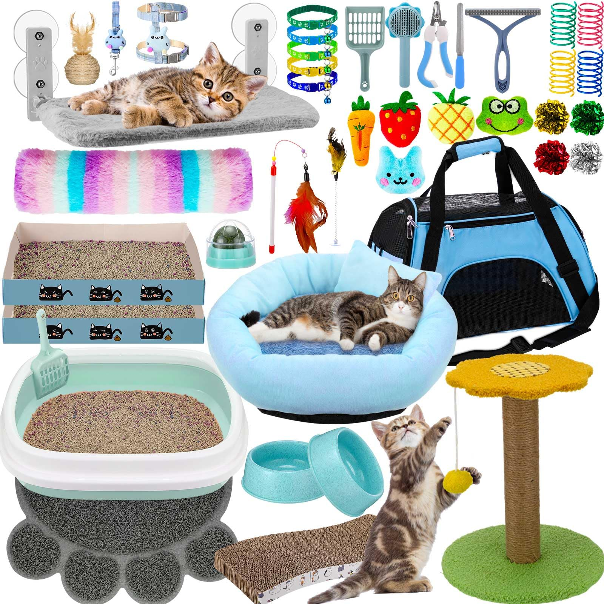
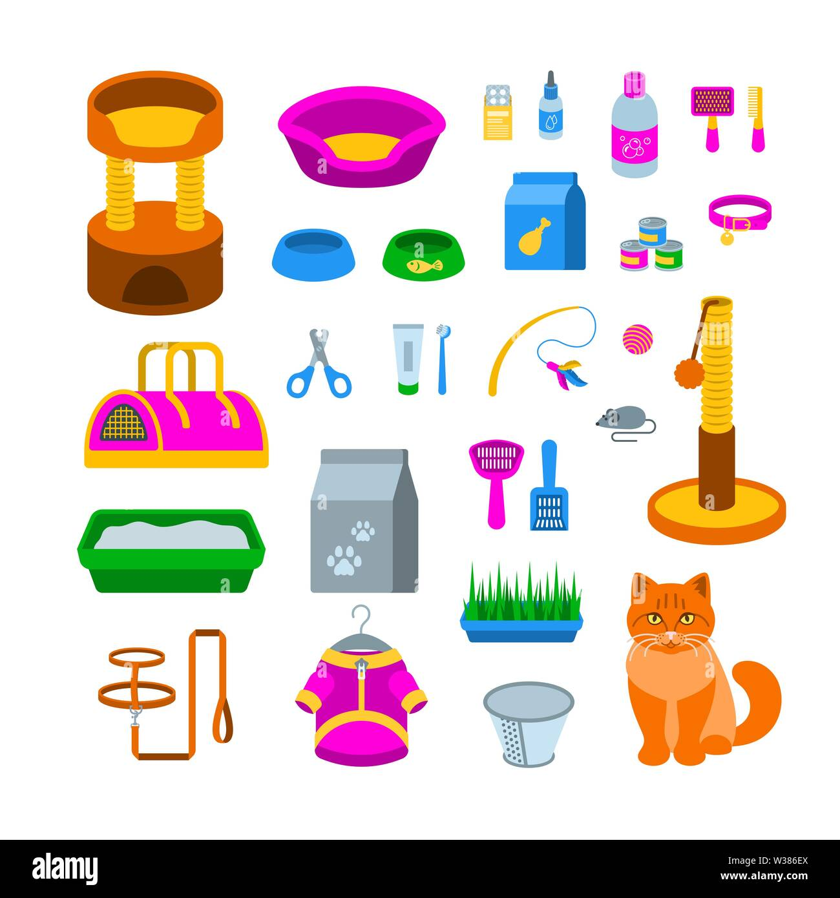
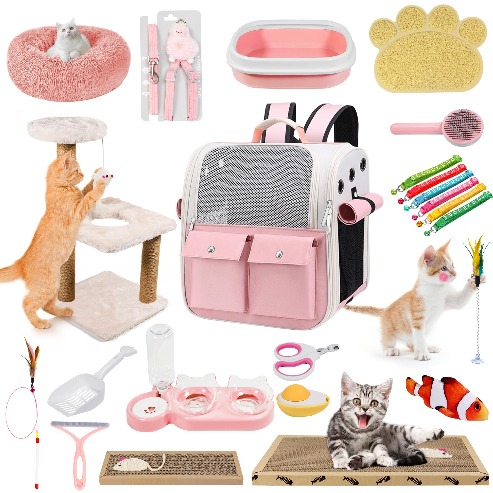

Supplies is also a basic need for cats. Here is what the internet says what supplies you need for your cats

The main basics of supplies
Litter box(Some will take large due to some cats liking big space)
Bowls(For food and water)
Scratching posts and pads
beds

Other items
Brushes
Shampoo
Nail Clippers
Cat Collars(Make sure to have a Phone number on it)
Toys and enrichment items

Attention to Health
Make sure to have items that prevent fleas and have a first ad kit, it's not recommened for the kit but it is encourage. Have this items so your companions don't bored and ruined somthing in your household